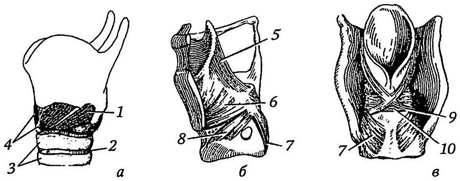
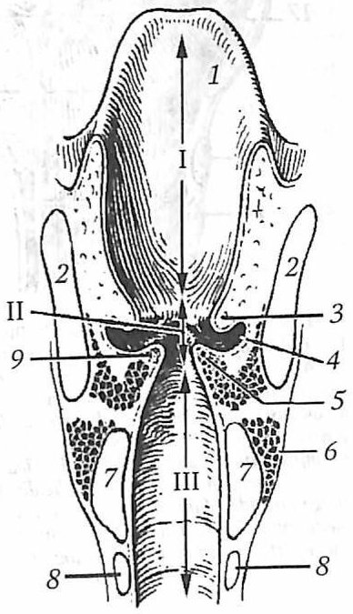

Анатомия и физиология гортани
Положение и функции
Гортань (larynx) относится к нижним дыхательным путям и одновременно служит основным органом голосообразования. Она регулирует поступление воздуха в трахею и бронхи, а также защищает их: воздух в гортани согревается, увлажняется и очищается, а попадание инородных тел предотвращается. Специфической функцией является фонация, и именно она определяет сложность строения органа. Гортань представляет собой полый орган массой около 28 г, построенный из хрящей, связок и собственных мышц и выстланный слизистой оболочкой.
Орган расположен над трахеей на уровне тел IV–VI шейных позвонков. Благодаря связи с подъязычной костью гортань смещается вверх и вниз при глотании и звукообразовании. Она хорошо пальпируется, а её части служат ориентирами при трахеотомии: у мужчин это выступ щитовидного хряща, у женщин и детей дуга перстневидного хряща.
Хрящи гортани
Скелет гортани образован парными и непарными хрящами. К непарным относятся перстневидный, щитовидный и надгортанный хрящи, к парным черпаловидные, рожковидные, клиновидные и зерновидные. Основанием служит гиалиновый перстневидный хрящ в форме перстня: узкая дуга обращена кпереди, широкая пластинка («печатка») кзади. На нём две пары суставных площадок, верхние для черпаловидных хрящей, нижние для нижних рогов щитовидного хряща.
Щитовидный хрящ (cartilago thyroidea) самый массивный. Его правая и левая пластинки сходятся спереди под углом, образуя выступ гортани, который у мужчин легко прощупывается; над ним расположена верхняя щитовидная вырезка. От заднего края пластинок отходят большие верхние и малые нижние рога. Черпаловидный хрящ напоминает трёхстороннюю пирамиду: основание сочленяется с перстневидным хрящом, от него вперёд идёт эластический голосовой отросток, к которому крепится голосовая связка и голосовая мышца, а назад короткий мышечный отросток для прикрепления двух перстнечерпаловидных мышц. На верхушке черпаловидного хряща лежит маленький рожковидный (санториниев) хрящ.
Почти все хрящи гортани гиалиновые, эластическими являются только голосовые отростки черпаловидных хрящей и надгортанный хрящ. Вход в гортань прикрывает надгортанник, похожий на язычок или лепесток: нижним узким концом (стебельком) он прикреплён к внутренней поверхности щитовидного хряща, верхняя расширенная часть выступает над ним. У детей раннего возраста, а иногда и у взрослых надгортанник узкий и желобовидный, что может затруднять ларингоскопию. С возрастом, особенно в пожилом и старческом, в хрящах (кроме надгортанника) откладываются соли кальция, и они становятся хрупкими.
Суставы и связки
Перстнещитовидные суставы образованы нижними рогами щитовидного хряща и площадками перстневидного. Движение происходит вокруг общей фронтальной оси: щитовидный хрящ наклоняется вперёд, а пластинка перстневидного вместе с черпаловидными хрящами отклоняется назад. Расстояние между углом щитовидного хряща и черпаловидными хрящами при этом увеличивается, и голосовые складки натягиваются.
В перстнечерпаловидном суставе возможны два вида движений. Вращение вокруг вертикальной оси разводит или сводит голосовые отростки и тем самым расширяет или сужает голосовую щель. Смещение вокруг сагиттальной оси сближает черпаловидные хрящи или отдаляет их друг от друга.
Надгортанник удерживают три связки: щитонадгортанная, подъязычно-надгортанная и язычно-надгортанные. При опускании гортани подъязычно-надгортанная связка натягивается и придаёт надгортаннику вертикальное положение, что обеспечивает свободный вход воздуха. С подъязычной костью гортань соединена щитоподъязычной мембраной, с глоткой рожково-глоточной и перстнеглоточной связками, с трахеей перстнетрахеальной связкой.
Мышцы гортани
Скелетные мышцы шеи определяют положение гортани: грудинощитовидная мышца опускает её, щитоподъязычная при фиксированной подъязычной кости поднимает. Собственные мышцы по функции делят на четыре группы: изменяющие ширину голосовой щели, изменяющие напряжение голосовых складок, изменяющие ширину входа в гортань и двигающие надгортанник.
Расширяет голосовую щель только одна мышца, задняя перстнечерпаловидная. Она вращает черпаловидные хрящи так, что мышечные отростки сходятся, а голосовые расходятся. Суживают щель латеральная перстнечерпаловидная, щиточерпаловидная, а также поперечная и косая черпаловидные мышцы. Латеральная перстнечерпаловидная мышца служит основным антагонистом задней, поперечная и косая сближают черпаловидные хрящи и сужают прежде всего межхрящевой отдел щели.
Перстнещитовидная мышца, самая сильная из мышц гортани, наклоняет щитовидный хрящ вперёд и натягивает голосовые складки. Её антагонистом является голосовая мышца (внутренняя часть щиточерпаловидной), лежащая в толще складки рядом с голосовой связкой. Она расслабляет связку и может сокращаться как целиком, так и отдельными пучками, изменяя напряжение лишь на части складки. Черпалонадгортанная мышца сужает вход в гортань и опускает надгортанник, рожково-перстневидная утолщает черпалонадгортанную складку и также уменьшает вход, щитонадгортанная мышца опускает надгортанник.

Полость гортани
На фронтальном разрезе просвет гортани напоминает песочные часы. Выделяют три отдела: преддверие, промежуточную (межскладочную) часть и подголосовую полость. Сужение в середине создают две пары складок слизистой оболочки, расположенные одна над другой: верхние преддверные (ложные голосовые) и нижние истинные голосовые.
Преддверие тянется от входа в гортань до преддверных складок; передняя стенка длиной около 4 см, задняя 1–1,5 см. Вход в гортань ограничен спереди надгортанником, с боков черпалонадгортанными складками, сзади верхушками черпаловидных хрящей и межчерпаловидной складкой. Снаружи от черпалонадгортанной складки между ней и стенкой глотки находится грушевидный карман, в верхней части которого проходит складка верхнего гортанного нерва.
Промежуточная часть включает ложные и истинные голосовые складки и углубления между ними, морганиевы желудочки. В преддверной складке лежат преддверная связка и непостоянная желудочковая мышца. Истинная голосовая складка содержит голосовую связку, ближе к просвету, и голосовую мышцу латеральнее. Голосовая щель делится на переднюю межперепончатую часть, равную длине связок, и заднюю межхрящевую, соответствующую голосовым отросткам. Длина голосовых связок у мужчин в покое 15 мм, при натяжении 20 мм, у женщин соответственно 11 и 15 мм.
Подголосовая полость расширяется книзу и переходит в трахею. Под слизистой оболочкой гортани находится фиброзно-эластическая мембрана. В пределах преддверия она образует четырёхугольную мембрану, нижний край которой формирует преддверную связку, в подголосовой области эластический конус, верхний утолщённый край которого составляет голосовую связку.
Слизистая оболочка гортани бледно-розовая, на истинных голосовых складках почти белая. Эпителий почти повсеместно многорядный мерцательный, а на голосовых складках и язычной поверхности надгортанника многослойный плоский. Голосовые складки лишены желёз; их увлажняет секрет желёз морганиевых желудочков. В подголосовой полости слизистая оболочка утолщена, рыхлая и богата железами, поэтому именно здесь склонны возникать отёки.
При спокойном вдохе голосовая щель имеет форму равнобедренного треугольника, при речевом и певческом дыхании складки расходятся максимально, и щель становится пятиугольной. На выдохе щель несколько сужается.

Фонация
Для объяснения голосообразования Д. А. Жданов выделил установочный и напрягающий аппараты гортани. Установочный аппарат образуют перстнечерпаловидные суставы и действующие на них мышцы; он определяет ширину голосовой щели и исходную длину складок. Напрягающий аппарат включает перстнещитовидные суставы и мышцы, а также голосовые мышцы; он изменяет напряжение и толщину складок. Голосовая мышца сокращается уже после того, как установочный аппарат задал длину складки, и меняет напряжение, как всей складки, так и отдельных её участков.
При фонации вначале щель расширяется для вдоха, затем суживается, и связки получают нужные длину и толщину. Воздух из лёгких под давлением в среднем 230 мм вод. ст. прорывается через узкую щель и приводит складки в колебание. Высота тона зависит от длины, толщины и натяжения связок, поэтому у басов они примерно на 5 мм длиннее, чем у теноров, а у альтов на 3 мм длиннее, чем у сопрано. Тембр определяется главным образом резонирующими полостями (глоткой, полостью рта и носа, околоносовыми пазухами) и артикуляцией.
Сосуды и нервы
Кровь поступает по верхней гортанной артерии, ветви верхней щитовидной, и нижней гортанной артерии, ветви нижней щитовидной. Верхняя артерия проходит через щитоподъязычную мембрану вместе с одноимённым нервом. Нижняя питает заднюю поверхность. Лимфатическая сеть наиболее развита в морганиевых желудочках и преддверных складках.
Иннервация осуществляется ветвями блуждающего нерва. Верхний гортанный нерв отдаёт наружную ветвь к перстнещитовидной мышце и нижнему констриктору глотки, а внутренняя ветвь обеспечивает чувствительную и парасимпатическую иннервацию слизистой оболочки выше голосовой щели. Нижний гортанный нерв является концевой ветвью возвратного нерва, который слева огибает дугу аорты, справа подключичную артерию. Он иннервирует слизистую оболочку ниже голосовой щели и все мышцы гортани, кроме перстнещитовидной. Возвратный нерв может быть сдавлен опухолью средостения или верхушки лёгкого, аневризмой аорты, увеличенными лимфатическими узлами. Тогда при ларингоскопии на глубоком вдохе голосовая щель приобретает форму прямоугольного треугольника. Выделяют три рефлексогенные зоны: гортанная поверхность надгортанника с краями черпалонадгортанных складок, передняя поверхность черпаловидных хрящей, подголосовая область. Первые две связаны с дыхательной и защитной функциями, третья вместе с рецепторами суставно-мышечного аппарата обеспечивает фонацию.
![Рис. 45. Ветви блуждающего нерва (вид сзади): 1 — верхний гортанный нерв; 2 — корень языка; 3 — гортань; 4 — нижний гортанный нерв; 5, 16 — трахеальные ветви; 6 — трахея; 7 — правая общая сонная артерия; 8 — правая подключичная артерия; 9 — правый возвратный гортанный нерв; 10 — правый блуждающий нерв; 11 — пищевод; 12 — левый блуждающий нерв; 13 — левый возвратный гортанный нерв; 14 — дуга аорты; 15 — пищеводные ветви; 17 — щитовидная ветвь; 18 — наружная ветвь верхнего гортанного нерва; 19 — внутренняя ветвь верхнего гортанного нерва](img/tb-gortan-nervy.jpg)
Возрастные особенности
У новорождённого гортань короткая, широкая, воронкообразная и расположена выше, на уровне II–IV шейных позвонков. Выступ гортани отсутствует, а продольная ось сильно отклонена назад, что важно при интубации. Надгортанник находится выше корня языка, поэтому пища обходит его по грушевидным карманам, и ребёнок может одновременно дышать и пить. Голосовая щель длиной 6,5 мм втрое короче, чем у взрослого; длина голосовых связок 0,4 см, у взрослого мужчины 2,0 см, у женщины 1,5 см.
Гортань быстро растёт в первые четыре года и вновь в пубертатном периоде, у мужчин до 25 лет, у женщин до 22–23 лет. Мутация голоса начинается у девочек на полгода–год раньше и протекает мягче; чаще она завершается за 1,5–2 года. В это время гортань мальчиков увеличивается в 1,5 раза, складки удлиняются и утолщаются и бывают гиперемированы, а мальчикам со сценическим голосом петь не рекомендуется. Из пороков развития чаще всего встречается ларингомаляция, при которой мягкие хрящи не удерживают просвет, и на вдохе ткани преддверия западают в полость.
Источники
- Гайворонский И. В., Гайворонский А. В., Ничипорук Г. И., Гайворонский А. И. Функциональная анатомия ЛОР-органов. — СПб.: СпецЛит, 2022. — С. 78–107.
Раздел «Учебник» — справочная теория, не клинические рекомендации. Тактика ведения пациента — по разборам КР.